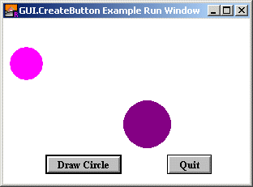

GUI.CreateButton (x, y, width : int, text : string,actionProc : procedure x ()) : int GUI.CreateButtonFull (x, y, width : int, text : string,actionProc : procedure x (), height : int, shortcut : char, default : boolean) : int
Creates a button and returns the button's widget ID. The button widget is used to implement a textual button. When you click on a button, the button's action procedure is called. If a button is given a short cut, then entering the keystroke will cause the action procedure to be called. It will not visibly cause the button to depress. Two Buttons The x and y parameters specify the lower-left corner of the button. The width parameter specifies the width of the button. If width is less than the size necessary to display the button, the button is automatically enlarged to fit the text. The text parameter specifies the text to appear in the button. The actionProc parameter is the name of a procedure that is called when the button is pressed. For GUI.CreateButtonFull, the height parameter specifies the height of the button. If height is less than the size necessary to display the button, the button is automatically enlarged to fit the text. The shortcut parameter is the keystroke to be used as the button's shortcut. The default parameter is a boolean indicating whether the button should be the default button. If there is already a default button, and default is set to true, then this button becomes the new default button.

The following program creates two buttons, one which draws a random circle on the screen and one which quits the program.
import GUI
procedure DrawRandomCircle
var r : int := Rand.Int (20, 50)
var x : int := Rand.Int (r, maxx - r)
var y : int := Rand.Int (r, maxy - r)
var c : int := Rand.Int (0, maxcolor)
Draw.FillOval (x, y, r, r, c)
% In case we drew over the buttons, redraw them.
GUI.Refresh
end DrawRandomCircle
View.Set ("graphics:300;200,nobuttonbar ")
var draw : int := GUI.CreateButtonFull (50, 10, 0, "Draw Circle",
DrawRandomCircle, 0, '^D', true)
var quitBtn : int := GUI.CreateButton (200, 10, 0, "Quit", GUI.Quit)
loop
exit when GUI.ProcessEvent
end loop
When GUI.CreateButton or GUI.CreateButtonFull is called, the newly created button will be displayed immediately unless GUI.DisplayWhenCreated has been called with the display parameter set to false. If a button's width or height is set to zero (or not specified at all), then the button is shaped to fit the text. A button can be the default button for a window. The default button is drawn with a thicker border around it. If the user presses ENTER in a window with a default button, the default button's action procedure is called. When a button is not enabled, the text in the button is grayed out and the button no longer responds to any mouse clicks or keystrokes until the button is enabled again.
The following GUI subprograms can be called with a button as the widgetID parameter: GUI.Show, GUI.Hide, GUI.Enable, GUI.Disable, GUI.Dispose, GUI.GetX,GUI.GetY, GUI.GetWidth, GUI.GetHeight,GUI.SetPosition, GUI.SetSize,GUI.SetPositionAndSize, GUI.SetLabel,GUI.SetDefault
Exported qualified. This means that you can only call the function by calling GUI.CreateButton, not by calling CreateButton.
gui_setlabel.html for changing the button's text, gui_setdefault.html for setting the default button in a window andgui_setcolor.html for setting the button's color.